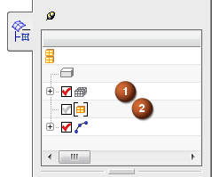

To replace a component FEM with its superelement representation, you edit the FE Model Occurrence Attributes of the component FEM in the context of the assembly FEM. In the Simulation Navigator, the component icon is bracketed ([ ]) to indicate that it is represented by a superelement.
|

|
In the graphics window, the boundary DOF nodes are displayed as unattached markers. You can also display the superelement as either a transparent, lightweight, non-selectable approximation of the base FEM, or a generic superelement symbol.
When you replace the base FEM representation with the superelement representation, the superelement ID (SEID) is displayed in the FE Model Occurrence Attributes dialog box. You may want to refer to the listed superelement ID when post-processing superelement results or troubleshooting the .f06 file.